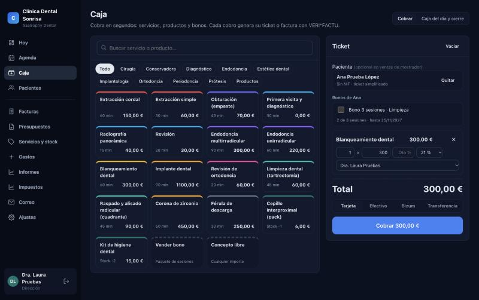

Reservas online desde el móvil (complemento Recepcionista)

Caja con bonos, productos y comisiones
1. Instálalo
Después de pagar te llega un email con tu clave de licencia y los enlaces de descarga (también los ves en la página de tu compra).
Descarga el instalador de tu sistema: Windows · Mac.
Windows: abre el archivo. Si sale «Windows protegió su PC», pulsa Más información → Ejecutar de todas formas.
Mac: abre el archivo .dmg y arrastra el programa a Aplicaciones. Si al abrirlo dice que es de un desarrollador no identificado, haz clic derecho sobre el programa en Aplicaciones, elige Abrir y vuelve a pulsar Abrir (o ve a Ajustes del Sistema → Privacidad y seguridad y pulsa Abrir igualmente). Solo pasa la primera vez.
2. Primer arranque (2 minutos)
Pega tu clave de licencia. El programa se prepara solo para tu tipo de centro, con los servicios más habituales ya cargados y sus precios orientativos (cámbialos en Servicios y stock).
Pon los datos de tu centro (salen en tickets, facturas y consentimientos) y crea tu acceso con un PIN.
En Ajustes → Equipo, añade a cada persona con su PIN, su comisión y si tiene agenda.
En Ajustes → Agenda y avisos, ajusta el horario, los cabinas y los mensajes de recordatorio.
3. Tablets y móviles
En Ajustes → Móviles y tablets aparece un código QR. Con la tablet en el mismo Wi-Fi, apunta la cámara al código y toca el enlace. Desde la tablet se firman los consentimientos y se hacen las fotos.
4. El día a día
Agenda: toca un hueco para dar cita; arrastra para moverla; «Buscar hueco» encuentra los primeros libres para un servicio.
Recordatorios: si conectas tu correo (Ajustes → Correo), cada cliente recibe un email la víspera. Desde la cita puedes mandarlo también por WhatsApp.
Caja: toca los servicios y productos, elige cómo paga y cobra. Cada cobro es un ticket (o factura con NIF) con VERI*FACTU. Al final del día, «Caja del día y cierre».
Bonos: «Vender bono» en la caja; al cobrar una cita, marca el bono para descontar la sesión.
Fichas: notas de sesión, fotos y consentimientos firmados.
5. Hacienda (VERI*FACTU)
Obligatorio desde el 1 de enero de 2027 (sociedades) y el 1 de julio de 2027 (autónomos). En Ajustes → Hacienda, sube tu certificado electrónico (.p12 o .pfx), pulsa «Probar conexión» y activa el envío. Desde entonces cada factura y ticket se envía solo y lleva el código QR.
Complemento: Recepcionista IA
Contesta el teléfono 24 h, da citas en esta agenda y recibe reservas online. Ver cómo funciona.
Actualizaciones
El programa comprueba solo si hay una versión nueva al abrirse. Si la hay, te pregunta «¿Actualizar ahora?»: no se pierde ningún dato y tarda menos de un minuto.
Copias de seguridad
En Ajustes → Copias de seguridad, elige la carpeta de Google Drive, OneDrive o Dropbox: cada noche se guarda una copia y se sube sola a la nube. Se conservan los últimos 30 días.
Cambiar de ordenador
Instala el programa en el nuevo, y copia la carpeta de datos (o restaura la copia de seguridad). Si la licencia dice que ya está en uso, desactívala desde el enlace de tu compra en Polar y actívala en el nuevo.
¿Algo no funciona?
En el programa, abre Ajustes y pulsa «Enviar informe a soporte»: se abre tu correo con un informe técnico (sin datos de tus clientes) dirigido a hola@saasophy.online. Cuéntanos qué pasó y te respondemos lo antes posible.